Research
Diffusion models need the score of every noise-perturbed marginal along the forward process. My projects ask how to get those scores when the standard ingredient is missing or noisy: when the latent space of a generative model is itself being learned, or when the target is an unnormalized posterior with no samples.
Jump to: CSEM · Gated Action Dissipation · Laplace–Fisher Gate Identities · Target Score Identity
Latent generative modeling
CSEM: end-to-end training of latent diffusion models In progress
Latent diffusion models are trained in two disconnected stages: an autoencoder first, then a score network on its frozen latents. Component Score Expectation Matching (CSEM) trains both together. The change is in the score target. Denoising score matching regresses onto the noise that was sampled; CSEM regresses onto the analytic score of each diffused encoder posterior. That target is a closed-form function of the encoder's mean and covariance, so the score loss passes gradients back into the encoder.
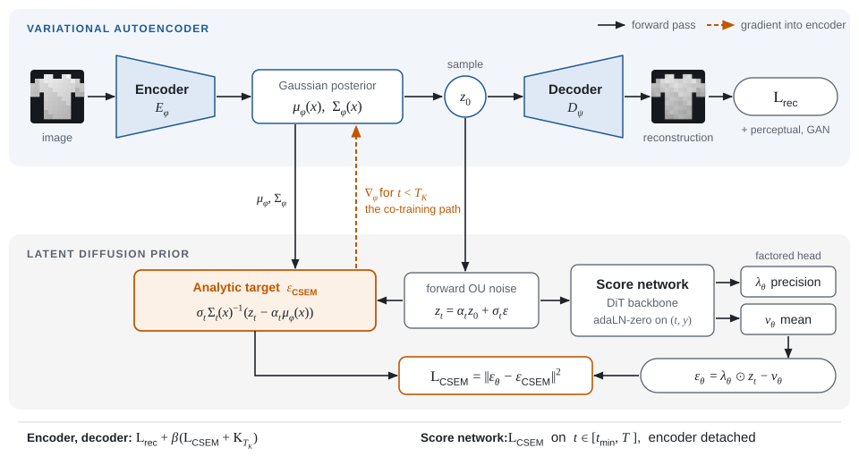
What the analytic target changes
- Same optimum, less target noise. The aggregate latent score is the conditional expectation of the component scores (the CSEM identity), so regressing onto them is a Rao–Blackwellized form of denoising score matching.
- An encoder signal that does not reward collapse. Joint training with the standard denoising loss lets the encoder shrink its posterior variance to drive that loss toward zero. In our runs the latent collapses within a few epochs and the learned prior becomes degenerate even though reconstructions stay sharp. CSEM removes exactly this incentive.
- An exact training objective. With physical-time weighting, the CSEM loss up to a representation horizon TK, plus an analytic terminal KL, equals score-estimation error plus the rate I(X; Z0) plus the aggregate mismatch to N(0, I) at TK. Moving TK interpolates between a β-VAE, a standard two-stage LDM, and fully joint training.
Results on CIFAR-10
| Training regime | Campaign and settings | FID |
|---|---|---|
| Co-trained CSEM (flat), best seed | Current runs: epoch 800, CFG 2.5 | 8.48 |
| Co-trained CSEM (flat), two-seed mean | Current runs: epoch 800, CFG 2.5 | 8.72 ± 0.34 |
| Co-trained CSEM | Matched sweep: epoch 500, CFG 3, two-seed mean | 9.82 |
| Independent representation, CSEM score head | Matched sweep: epoch 500, CFG 3, two-seed mean | 12.40 |
| Independent VAE, denoising (Tweedie) target | Historical report: epoch 800, CFG 3 | 22.78 |
Flat CSEM co-training reaches 8.48 FID on CIFAR-10 in the current runs, with a two-seed mean of 8.72 ± 0.34 (epoch 800, temperature 1, CFG 2.5). In an earlier sweep with matched settings, co-training lowered FID by about 21%, from 12.40 to 9.82, against the strongest independent-representation baseline: a VAE trained with no gradient from the diffusion loss, sampled with the same CSEM-trained score head and taken at the best of its reported KL-weight settings. The gain comes from a latent representation that is easier to model and to integrate in few steps, not from the score target alone.
Results on Fashion-MNIST
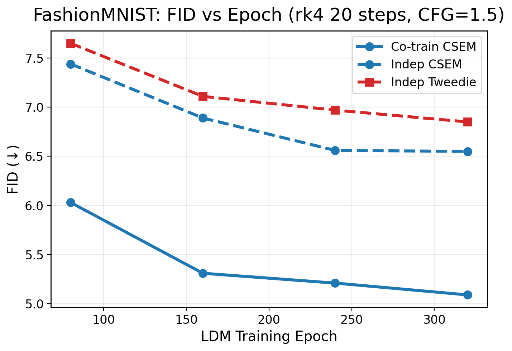
| Training regime | FID |
|---|---|
| Two-stage, denoising target | 6.84 |
| Two-stage, CSEM target | 6.69 |
| Co-trained, CSEM | 5.03 |
| Autoencoder reconstructions | 4.24 |
Swapping the target while keeping the autoencoder frozen moves FID only slightly, from 6.84 to 6.69. Most of the improvement appears once the CSEM objective is allowed to shape the encoder (5.03).
Protocol. FID uses InceptionV3 features against real test images; all values are generation FIDs except the Fashion-MNIST reconstruction floor. Within each campaign, the regimes share the score backbone, the sampler, and the evaluation settings. The Fashion-MNIST results and the CIFAR-10 denoising-target baseline come from an earlier training configuration; an architecture-matched Fashion-MNIST comparison is in progress.
Implementation
- PyTorch; LightningDiT score backbone with adaLN-zero conditioning on diffusion time and class label.
- Factored natural-parameter output head (precision ⊙ latent − mean), read off the CSEM identity, with a gauge-fixing auxiliary regression that touches only the head.
- VAE trained with reconstruction, perceptual, and PatchGAN adversarial losses; class-conditional encoder and classifier-free guidance.
- Routed two-horizon gradients: the representation loss acts on [tmin, TK], and the score network trains on [tmin, T] with the encoder detached.
Diffusion sampling for Bayesian inverse problems
In a Bayesian inverse problem the target density is known up to a constant, together with its score and (Gauss–Newton) curvature, but there are no target samples. These three projects build score estimators from that information and use them to transport samples to the posterior.
Gated Action Dissipation for Bayesian inverse problems Manuscript
Gated Action Dissipation (GAD) samples a posterior by repeated diffusion transport of an unweighted sample bank. Each round rebuilds the reverse-diffusion score from the current bank, the target score, and its observed information, then transports fresh Gaussian draws with that frozen score to form the next bank. The rebuilt score uses q-LFGI: the LFGI matrix gate (below) evaluated under the current law rather than the target. No importance weights, resampling, inner Markov chain, or density fit of the transported law are used.
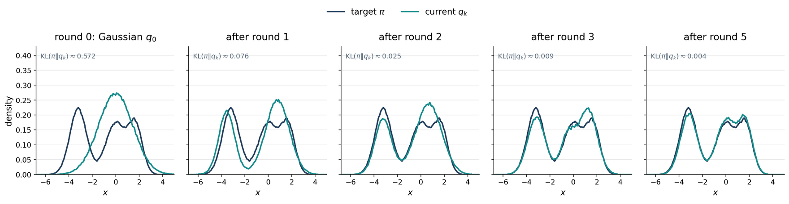
What the analysis shows
- Which part of the score correction is observable. A conditional Stein–Poisson representation writes the inaccessible target/current relative score and the computable Tweedie/target-score disagreement as two moments of one conditional flux: the first unweighted, the second weighted by observed information. Inverting the mean information channel gives exactly the q-LFGI correction, so its error is exactly the transverse remainder rather than an unspecified gate defect. At the target, q-LFGI reduces to the variance-optimal LFGI gate.
- Convergence from any finite-KL start. For strongly log-concave perturbations of a Gaussian (bounded perturbation Hessian and gradient variation), an exact residual identity gives a certificate θ computed from the target alone. When θ < 1, the population GAD map contracts forward KL by θ2 per round from every initial density with finite KL, with no smoothness, moment, or proximity assumption on the start. A finite diffusion horizon adds an error that decays exponentially in the horizon.
- Where the theorem stops. The class excludes separated multimodal targets and has not been verified for the inverse posteriors below. In a mode-separation study, first-round KL progress tracks clean-score sensitivity as two modes separate; both fall by orders of magnitude, and mass imbalance persists at large separation.
Nonlinear inverse problems
Two posteriors with curved physical uncertainty test finite-bank GN-GAD, which uses Gauss–Newton curvature and an annealed likelihood path whose final rounds target the full posterior. In acoustic trajectory inversion (16 dimensions), eight time-difference-of-arrival measurements at two receivers constrain the path of a moving source. In joint earthquake location (23 dimensions), five events and three shared velocity parameters are inferred from 24 arrival-time picks at six stations; four of the events are seen by only three picks each. The comparisons are MAP-preconditioned MALA started from MAP–Laplace (MAP-pMALA), annealed MALA and HMC, and local Gauss–Newton MALA (GN-smMALA, with and without annealing), all at a common request allowance.
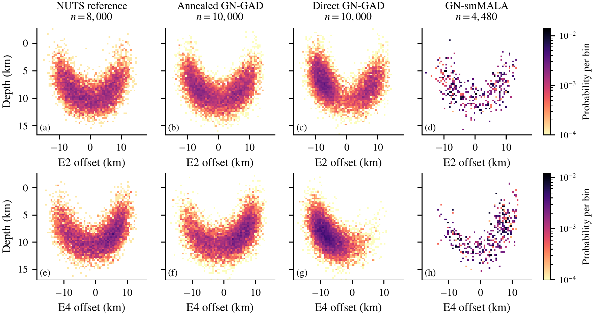
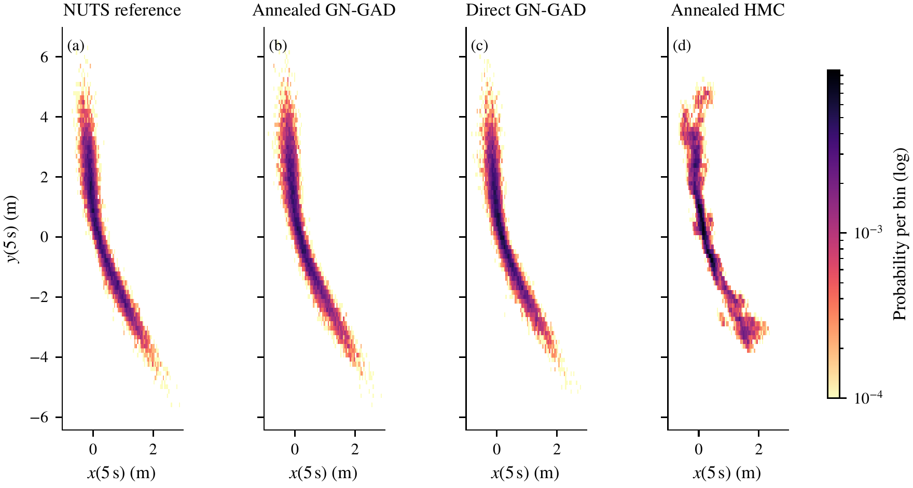
Annealing lowers GAD's distributional error in every paired seed of both problems: by 13% for the acoustic trajectory and by half for earthquake location (0.311 → 0.154), where annealed GN-GAD is 42.5% below the best MCMC control, GN-smMALA. MAP-pMALA fits the data well but misses much of the curved support.
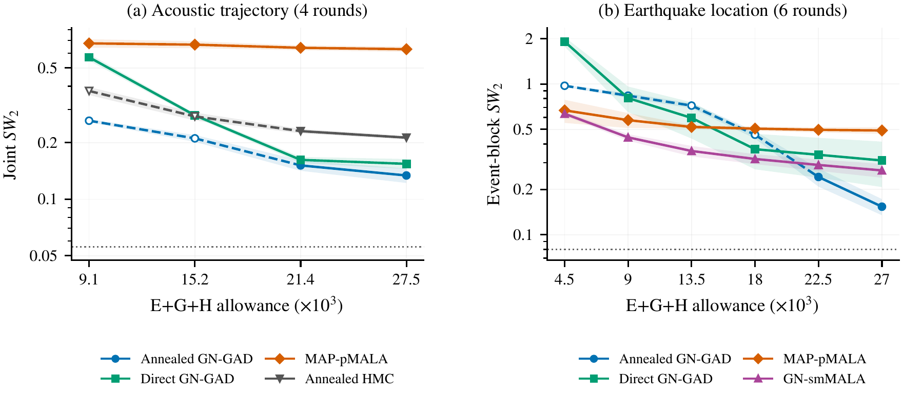
| Method | Acoustic (16-D) | Earthquake (23-D) |
|---|---|---|
| Annealed GN-GAD | 0.134 ± 0.012 | 0.154 ± 0.019 |
| Direct GN-GAD | 0.154 ± 0.009 | 0.311 ± 0.104 |
| MAP-pMALA | 0.630 ± 0.020 | 0.491 ± 0.025 |
| Annealed MALA | 0.218 ± 0.001 | 0.653 ± 0.020 |
| GN-smMALA | 0.312 ± 0.113 | 0.267 ± 0.028 |
| Annealed GN-smMALA | 0.239 ± 0.026 | 0.374 ± 0.021 |
| Annealed HMC | 0.213 ± 0.004 | 0.359 ± 0.028 |
Protocol. Each problem uses one fixed synthetic dataset; the spread is over five sampler seeds, against NUTS-based references that never enter any sampler. Every method is charged the same cumulative count of energy, gradient, and curvature requests, including MAP setup, warmup, and rejected proposals; this matches requests, not FLOPs or wall time. Gauss–Newton curvature, likelihood annealing, and probability-flow transport lie outside the convergence theorem. Other diagnostics trade off differently: MAP-pMALA matches the data-fit statistic best in both problems, annealed GN-GAD's acoustic data-fit ratio is about 2 (target 1), and in the acoustic problem annealed GN-smMALA and annealed HMC have slightly lower maximum event-probability error.
Algorithmic checks and two-dimensional benchmarks
Gate choice. On an eight-dimensional ridge target with location-dependent anisotropy, seven rebuilding rules run at equal reference counts (1,024) and rounds. After three rounds q-LFGI has the lowest error, a normalized sliced Wasserstein-2 distance of 8.56 ± 0.40% against a target-versus-target sampling scale of 7.87 ± 0.29%. The next best, a local scalar gate, reaches 12.12 ± 0.75%, and the target-score (TSI) estimator fails in every run by round three.
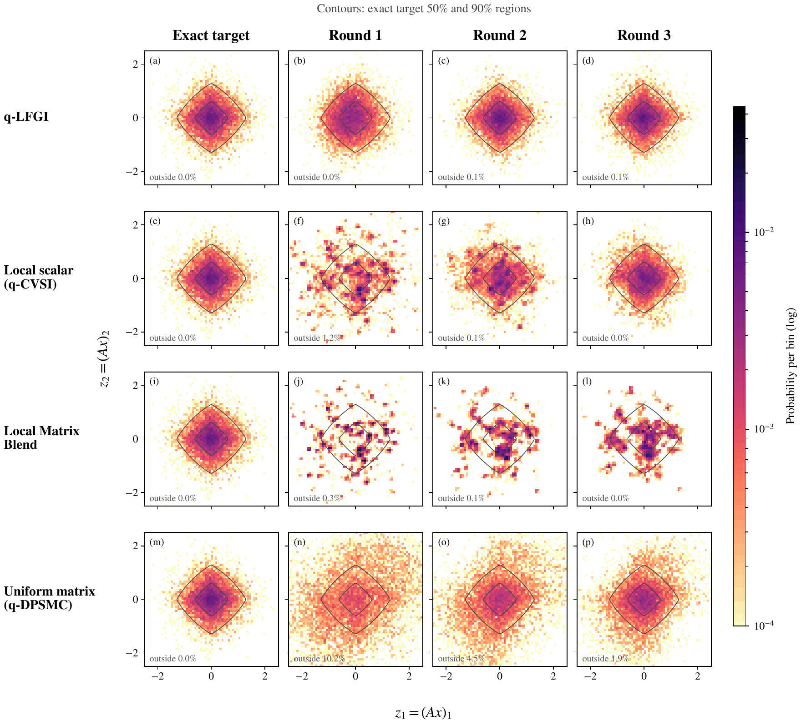
Mode separation. For an equal-weight two-Gaussian target, started from the correct components with 0.7/0.3 weights, exact population density calculations (no sampling) compare measured KL progress with clean-score sensitivity as the components separate.
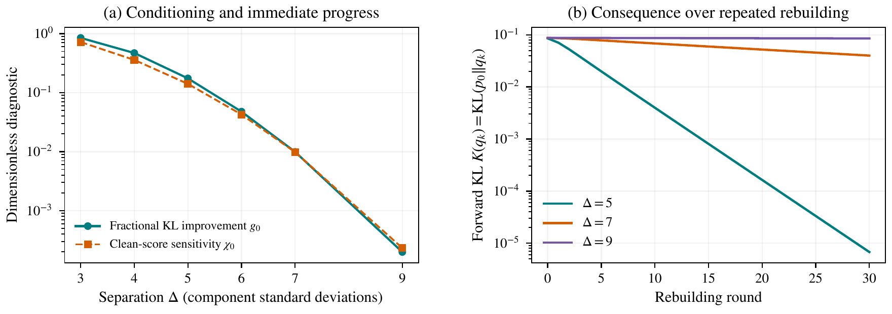
Connected two-dimensional targets. Against isotropic MALA and unit-mass HMC, all started from the same broad law and given 24,576 energy, gradient, and Hessian requests, three-round GAD with 4,096 references has the lowest mean error on the Gaussian, unequal-lobe, and S-chain targets, and HMC has the lowest on the ring. Seed-to-seed variation rules out a uniform ranking.
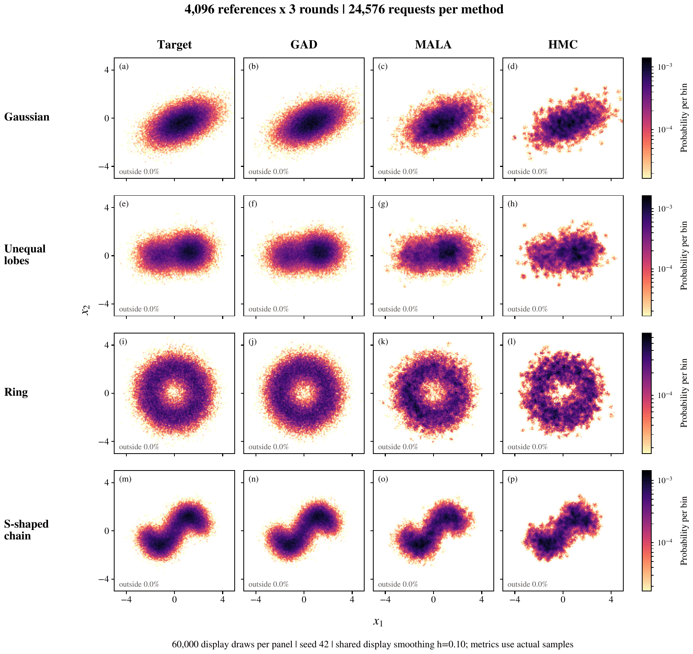
Laplace–Fisher Gate Identities for matrix-gated score estimation Preprint
Scalar blends of the Tweedie and target-score estimators are too rigid for singular or strongly anisotropic targets. Casting blended score estimation as conditional risk minimization over matrix-valued gates gives the variance-optimal gate in closed form,
G⋆(y,t) = αt2 ( αt2 I + γt 𝔼[ H0(X0) | Yt = y ] )−1, H0 = −∇2 log p0,
the Laplace–Fisher Gate Identity (LFGI): a resolvent of the conditionally averaged observed information. Because the Tweedie–TSI disagreement has conditional mean zero, the gate changes the estimator's variance without changing its expectation.
What the paper establishes
- The optimal matrix gate. Over all matrix gates, the LFGI resolvent minimizes conditional trace risk. The exact Gaussian calculation shows why a scalar gate cannot do this: it applies one weight to stiff and soft directions alike.
- Two routes to the same gate. Centered regression on the score disagreement (the Matrix Blend below) and LFGI estimate the same population gate, but with different finite-reference errors: regression estimates a covariance ratio, LFGI a conditional Hessian average before inversion. The paper gives consistency and stability bounds for finite-reference LFGI.
- Normalized densities from MCMC byproducts. A frozen finite-reference LFGI score has a closed-form divergence, so MCMC pilot samples and derivative information define a normalized probability-flow density for the posterior. This supports posterior-energy evaluation and model-evidence estimation that the samples alone do not provide.
Sampling with matrix gates
Six score estimators drive the same reverse-SDE sampler: Tweedie, uniform and local scalar blends, uniform and local matrix blends, and LFGI, each built from independent score and gate banks of 250 reference samples, averaged over five runs. In the misaligned singular-subspace mixtures, each of eight components is nearly singular (rank 3 in d = 8), and the stiff subspace rotates from component to component, so the optimal gate changes across the space.
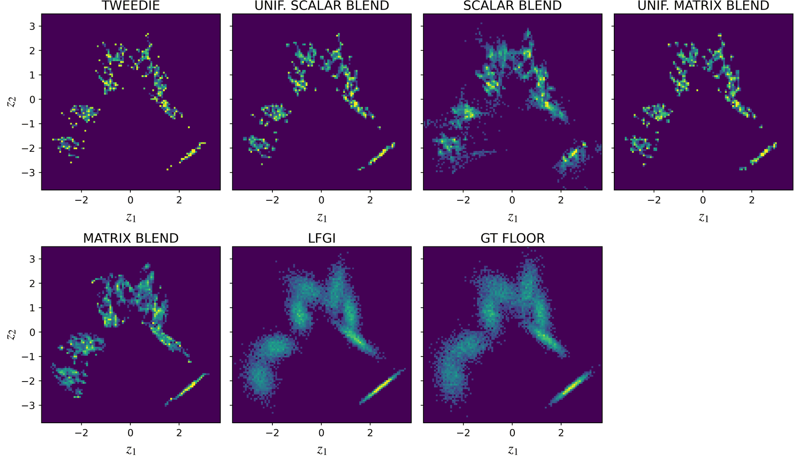
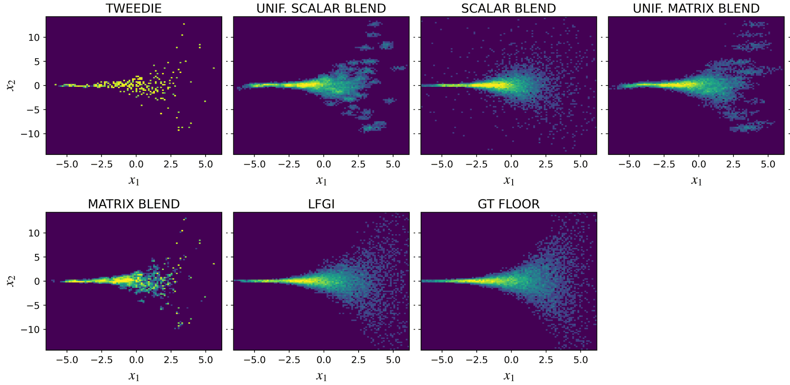
| Score estimator | Mixture, d = 8 | Mixture, d = 24 | Funnel, d = 10 |
|---|---|---|---|
| Tweedie | 7.32 ± 0.95 | 10.16 ± 1.23 | 148.7 ± 72.3 |
| Uniform scalar blend | 6.28 ± 0.68 | 9.82 ± 0.96 | 62.1 ± 45.8 |
| Scalar blend | 6.78 ± 0.79 | 11.58 ± 0.97 | 9.31 ± 0.68 |
| Uniform matrix blend | 6.47 ± 0.45 | 9.65 ± 0.51 | 54.1 ± 13.4 |
| Matrix blend | 7.45 ± 0.43 | 11.76 ± 0.57 | 123.9 ± 20.7 |
| LFGI | 2.85 ± 0.17 | 4.47 ± 0.20 | 9.28 ± 1.84 |
LFGI also has the best sliced Kolmogorov–Smirnov distance, MMD, and held-out KDE likelihood of the six estimators on all three targets. On the funnel its sliced KS distance is 0.061 ± 0.005, against 0.053 ± 0.008 for an independent ground-truth sample of the same size.
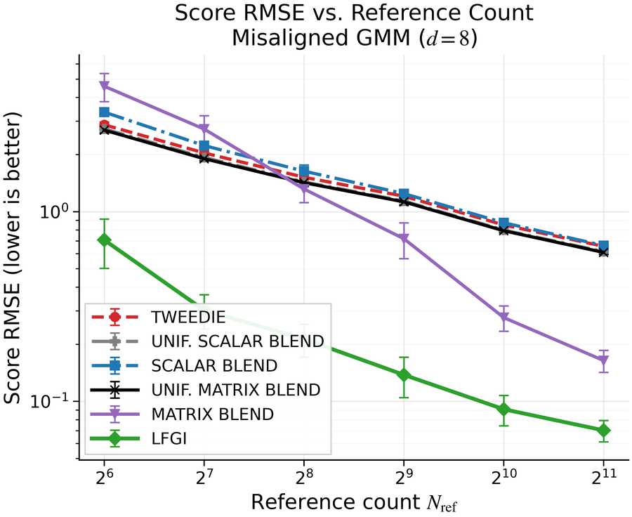
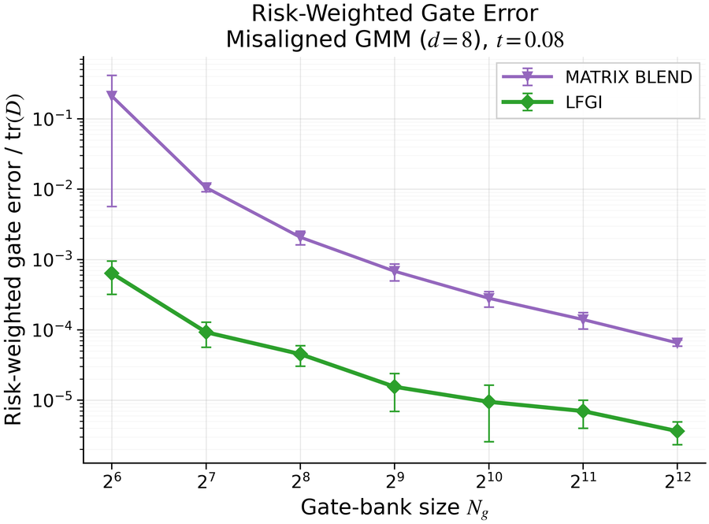
Normalized density evaluation for inverse problems
In a Darcy-flow inverse problem, the 32 leading prior-covariance modes of a log-permeability field are inferred from pressure at 120 interior sensors with noise level 10−3. MALA pilot samples supply 1,000 score and 1,000 gate references; LFGI–GN builds the gate from a Gauss–Newton precision, and the frozen score defines a normalized probability-flow density. Each density is checked against the true unnormalized posterior energy on 1,000 held-out MALA samples, alongside the MAP–Laplace Gaussian.
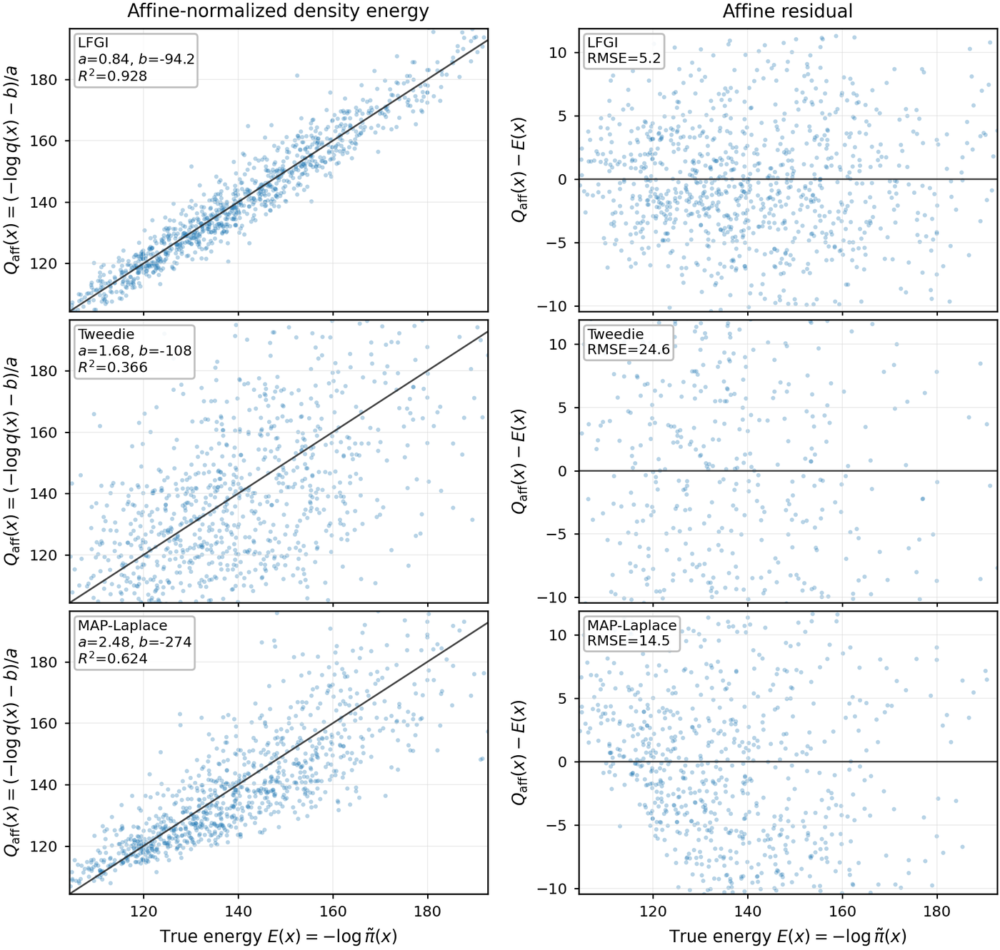
| Density model | Spearman ↑ | Central R2 ↑ | Central RMSE ↓ | NLL ↓ |
|---|---|---|---|---|
| Tweedie | 0.598 ± 0.016 | 0.377 ± 0.027 | 40.0 ± 0.9 | 136.3 ± 3.4 |
| Uniform scalar blend | 0.579 ± 0.024 | 0.298 ± 0.148 | 607 ± 1263 | 873 ± 1650 |
| Scalar blend | 0.19 ± 0.27 | 0.004 ± 0.003 | (4.3 ± 4.6)×1012 | (1.1 ± 1.2)×1013 |
| Uniform matrix blend | 0.48 ± 0.26 | 0.294 ± 0.249 | 1005 ± 2155 | 431 ± 685 |
| Matrix blend | 0.660 ± 0.023 | 0.432 ± 0.038 | 42.1 ± 2.0 | 127.6 ± 2.1 |
| LFGI–GN | 0.949 ± 0.015 | 0.86 ± 0.06 | 6.3 ± 1.6 | 28.8 ± 1.2 |
| MAP–Laplace | 0.862 ± 0.004 | 0.626 ± 0.009 | 34.3 ± 1.9 | 198 ± 62 |
Because the Darcy posterior's normalizing constant is unknown, absolute evidence accuracy is checked on analytic inverse problems with closed-form evidence: a linear-Gaussian control, a four-mode mixture posterior with shared curvature, and a four-mode mixture whose stiff directions differ between modes.
| Density model | Linear-Gaussian | Shared-curvature mixture | Misaligned-curvature mixture |
|---|---|---|---|
| Tweedie | 18.4 ± 0.10 | 29.6 ± 0.41 | 29.9 ± 0.62 |
| Uniform scalar blend | 1.91 ± 0.04 | 3.69 ± 0.13 | 3.77 ± 0.15 |
| Scalar blend | 5.01 ± 1.4 | 5.92 ± 2.8 | 5.87 ± 2.7 |
| Uniform matrix blend | 0.084 ± 0.009 | 0.095 ± 0.005 | 2.37 ± 0.06 |
| Matrix blend | 1.77 ± 0.13 | 5.27 ± 0.28 | 5.66 ± 0.42 |
| LFGI–GN | 0.080 ± 0.009 | 0.092 ± 0.007 | 0.102 ± 0.007 |
| MAP–Laplace | 0 (exact) | 672 ± 14 | 415 ± 110 |
A spatially uniform matrix gate is enough while curvature is shared across the posterior; once the stiff directions differ between modes its evidence error rises to 2.37, while LFGI–GN stays at 0.10.
Scaling check and gate estimation at other diffusion times
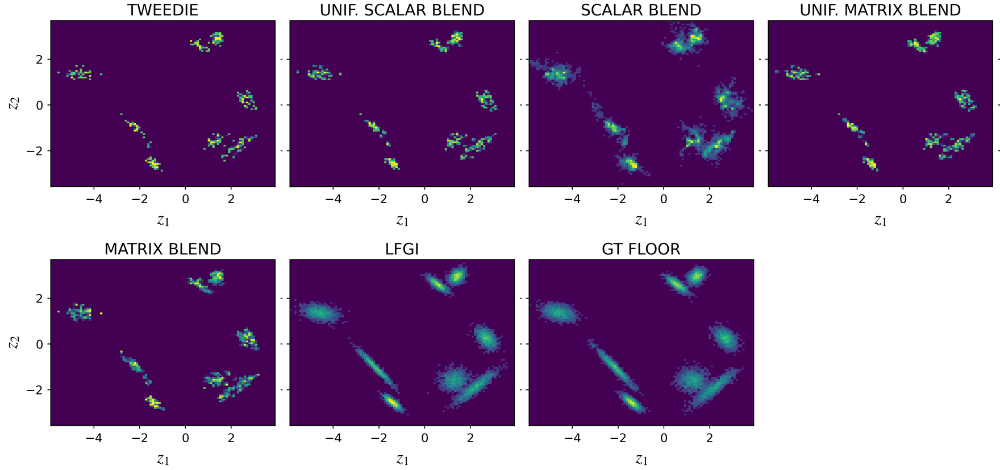
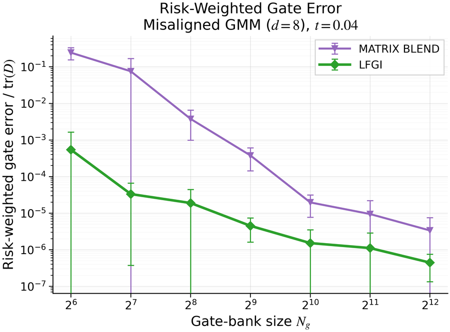
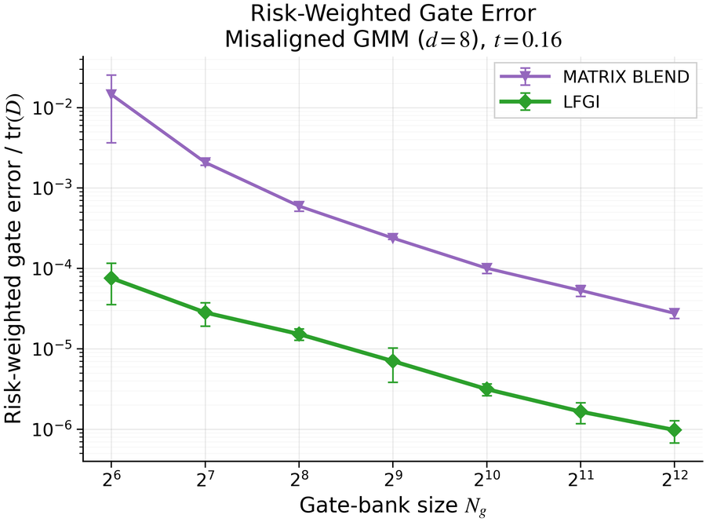
Variance-reduced diffusion sampling via the Target Score Identity Preprint
The noisy marginal score can be written two ways: through Tweedie's denoising identity, or through the Target Score Identity (TSI), a conditional expectation of the clean target score under the forward diffusion. The two particle-wise estimators have complementary variance: Tweedie's is large at small diffusion times, TSI's at large times.
- A plug-and-play, nonparametric self-normalized importance sampling estimator of the TSI score that works with standard reverse-time solvers.
- A variance-minimizing, state- and time-dependent blend of the Tweedie and TSI estimators, with an analysis of their anti-correlation.
- A data-only extension using locally fitted proxy scores, and a likelihood-tilting extension to Bayesian inverse problems.
- A Critic–Gate distillation scheme that amortizes the blending coefficient into a neural gate.
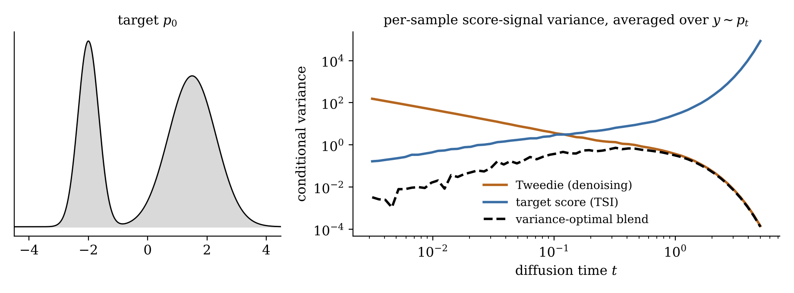